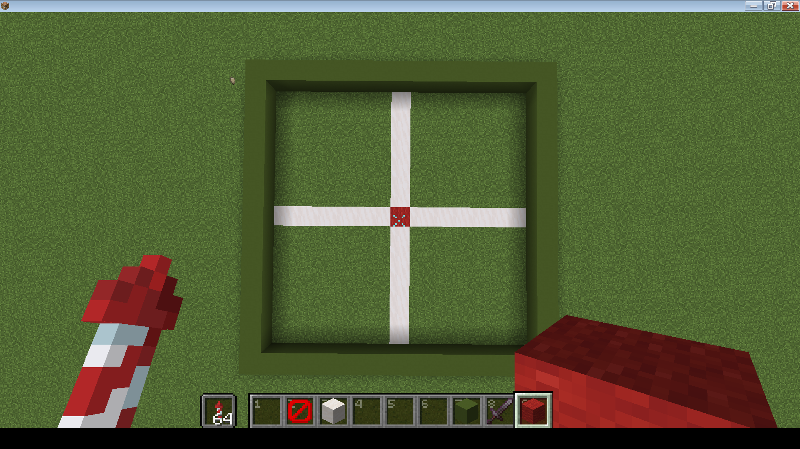
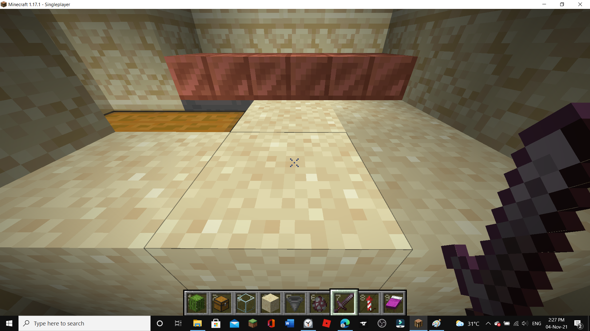

raid farms are very very useful in your minecraft world as they will give you totems of undying, XP, emeralds, and hero of the village. It will also give you the "hero of the village" achievement.
If you want a youtube tutorial, please go to here to view a tutorial by chapman.
okay, you first have to build a fifteen by fifteen square
next you have to mark out the center of the build. mine is the red dot in the middle. the quartz lines are for reference.
ok, now you have to place three warped fence gates in this exact order. otherwise the farm wont work. Use the image below as reference. I used three dirt blocks as reference. They HAVE to be warped fence gates or else the lava will burn through the fence gates.
place another fence gate like this.
put four fence gates and four BLACKSTONE walls like this.After youre done then open all fence gates.
Next place blocks at the locations marked in red.
place blocks at the locations in red
now you need to place a water source block in every place on the inner ring except the spaces in red. you should have the result down below.
now place a lava bucket like this.
next dig 27 blocks down starting from the blocks under the three fence gates you placed in step 3.
next create a little room for yourself to stand in.
put a double chest

place hoppers as shown.
now place slabs on the hoppers as shown below.
THIS STEP IS IMPORTANT!! place five blocks as shown so you are standing two blocks away from the hoppers.
ok now plug up the water source blocks using temporary blocks.
now make this setup for the villager. the pit should be four blocks deep. cover the top two blocks with glass.
Unplug the water source blicks and you are done!